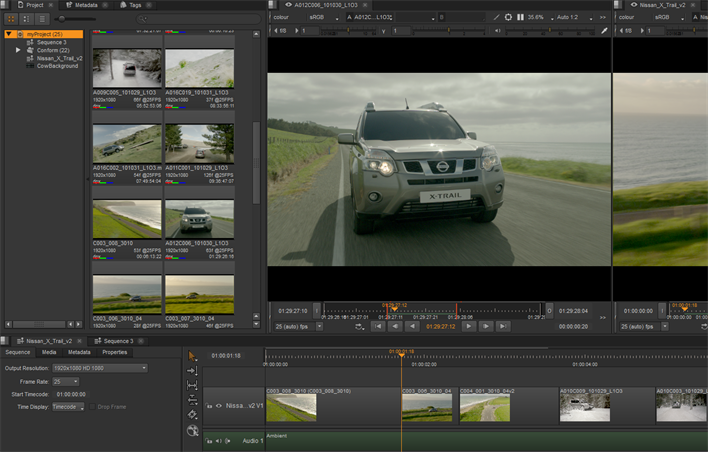
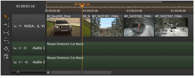
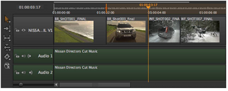
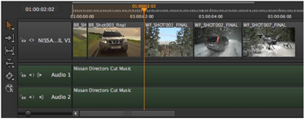
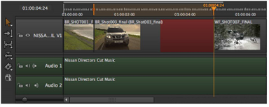

Setting the output of a source clip and then editing the clip into a timeline at a specific point is sometimes referred to as 3-point editing. Using this method, you can insert and overwrite edits in an existing timeline or quickly construct scratch timelines from your source clips.
Firstly, set the output of your source clip using In and Out points in a clip Viewer, then set the reference In or Out point on your timeline to determine the clip’s position. Finally, add the clip to the timeline using Insert or Overwrite.
TIP: You can set both In and Out points on the timeline, but bear in mind that there may be insufficient source frames for the range specified. If this is the case, blank frames are added and highlighted in red.
You can select a track before editing if you don’t want to target the lowest available track. When inserting, even if the target track is empty, clip instances on all other unlocked tracks are rippled by the same amount.
| 1. | Navigate to Workspace > Editing to display the 2-up Viewer layout. |
| 2. | Double-click the required source clip to load it into the left-hand clip Viewer |
| 3. | Set the required frame range using In and Out points. |
| 4. | Double-click your sequence in the bin view to load it into the right-hand sequence Viewer |
| 5. | Set In and/or Out points on the timeline to specify where the clip should be added and use Insert (N) or Overwrite (M) as required. |
As an example, assuming your clip Viewer and timeline are represented by the following image, and the Overwrite function is used:

• No In or Out points - insert or overwrite at the current playhead position, for the range currently set in the clip Viewer.

• In point but no Out point - insert or overwrite from the In point position downstream, for the range currently set in the clip Viewer.

• Out point but no In point - insert or overwrite from the Out point position upstream, for the range currently set in the clip Viewer.

• In and Out points - insert or overwrite at the current In point position, for the duration set by the timeline's In and Out points. If there are insufficient source frames for the range specified, blank frames are added highlighted in red.

|
|